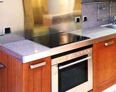

Качественный электромонтаж в Санкт-Петербурге и ленобласти, стаж 12 лет. Частный электрик, недорого и качественно.
Тел. 8 904 642 08 57 Николай.

Сделать освещение кухни - фото.
Мастер электрик в СПБ, недорого!
Эта уникальная, познавательная и полезная статья рассказывает о том, как сделать освещение кухни правильным и при этом красивым и современным.
Пожалуй, кухня – это самое многофункциональное место во всем доме. Здесь, как правило, не только готовится, а также употребляется еда, но и можно пообщаться за чашкой чая или кофе, завести душевный разговор или же просто посидеть с семьей. Как ни странно, но и от освещения зависит, насколько она будет уютной и удобной в быту.
Сколько стоит сделать освещение кухни?
|
Площадь пола кухни. КВ. м. |
Цена в руб за электромонтаж под ключ. |
|
5 кв. м. |
От 7 000 |
|
6. |
8 000 |
|
8. |
9 000 |
|
10. |
10 000 |
|
12 кв. м. |
11 000 |
|
14 кв. м. |
12 000 |
|
Монтаж освещения в кухне – 1 точка. |
От 500 |
Очень многие допускают грубую ошибку – располагают один яркий источник света в центре потолка. Это неправильно только лишь потому, что при данных условиях свет слишком яркий и раздражающий в центре, а шкаф, плита, раковина освещаются на недостаточном уровне. Наиболее оптимальным решением станет размещение нескольких точек освещения, гармонирующих с интерьером, и давая достаточное количество света на рабочих поверхностях.

Кухонные светильники классифицируются на потолочные, подвесные и светодиодные. Потолочные светильники – это люстры, которые, как правило, состоят их нескольких ламп. Такая люстра должна тщательно подбираться под интерьер. В интерьер деревянной кухни очень удачно впишется люстра-канделябр, возможно даже с хрустальными подвесками. Очень популярным стал прованский стиль, и подчеркнуть его можно благодаря кованой люстре с лампочками-свечками. Со стилем кантри гармонично будут сочетаться светильники «под старину». А современную высокотехнологичную кухню можно оснастить ультрамодной, креативной люстрой, выполненной из самых различных материалов.
Соответствие разных стилей может быть признаком хорошего вкуса, при этом дизайнеры призывают не бояться экспериментов, но все должно быть в меру. Но в погоне за новейшими веяниями нельзя забывать о прямом назначении кухни, а чтобы она оставалась не только красивой, но и безопасной, поэтому хорошим освещением не стоит жертвовать.

Вызов мастера по кондиционерам
Сколько будут стоить материалы.
Электрика в бане в медной трубе - цены.

Расценки на электропроводку квартир.
Сколько стоит замена электропроводки в двухкомнатной квартире?.